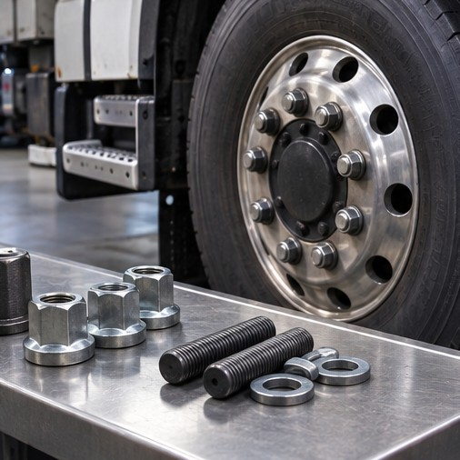
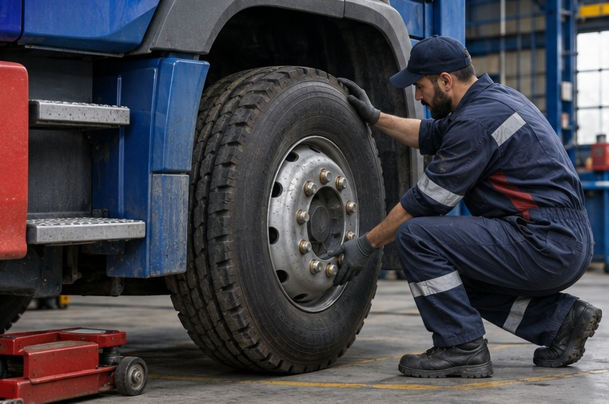
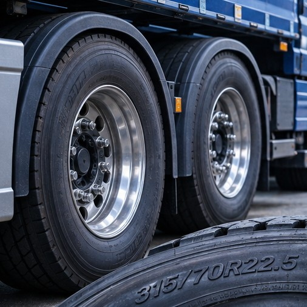

Написать сообщение в Telegram

Заезд на Ярославского
Открыть Telegram с сообщениемПроверьте черновик в Telegram и отправьте его мастеру.
Ремшина · Ярославского, стр. 258ж/468
Согласуйте заезд заранее. Мастерской пригодятся тип машины, размер шины и количество колёс.


Заезд на Ярославского
Открыть Telegram с сообщениемПроверьте черновик в Telegram и отправьте его мастеру.

Помимо шиномонтажа, уточните ремонт пореза, наварку или восстановление диска. Если повреждение видно, подготовьте фото.
Иркутск
Ежедневно, 09:00–19:00 по 2ГИС